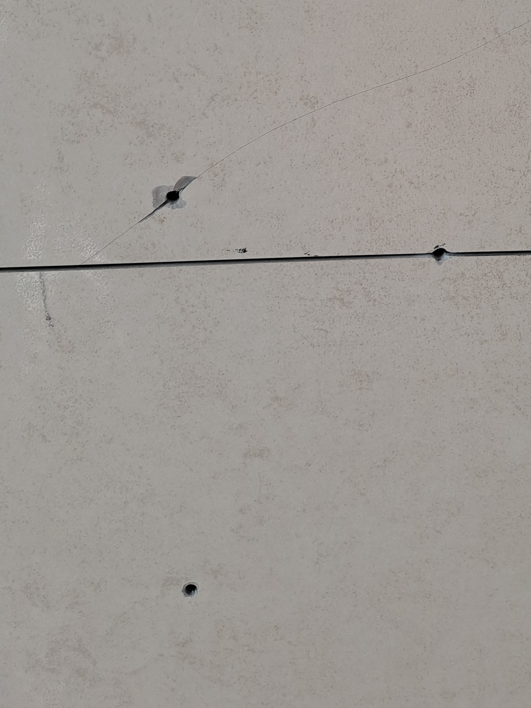
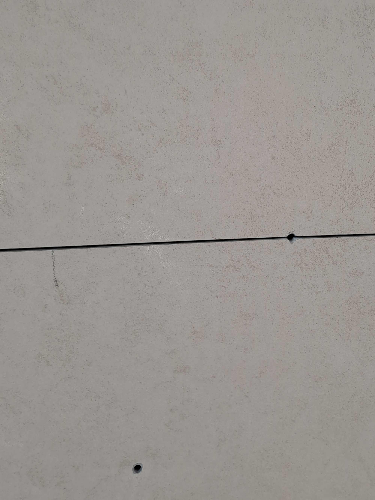
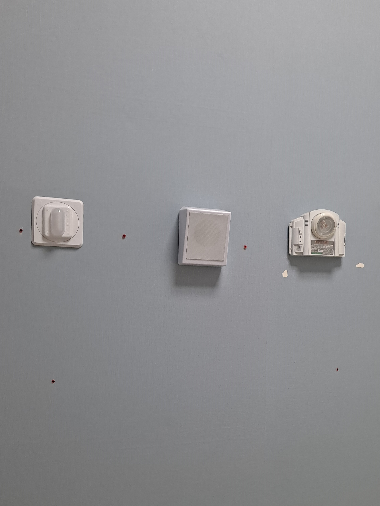
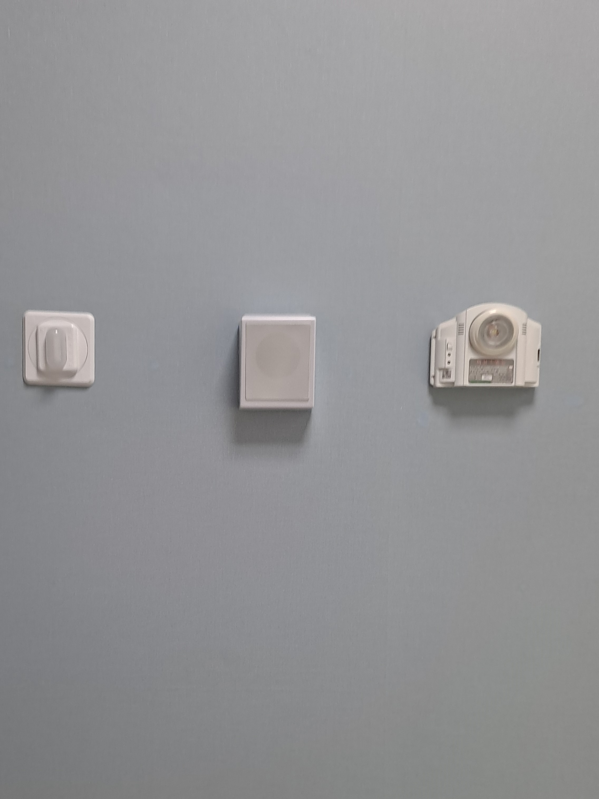

보양·손상 확인
주변 시설을 보호하고 구멍의 크기, 깊이, 크랙과 표면 손상 범위를 확인합니다.
방의 벽걸이TV를 떼어낸 뒤 벽지에 남은 못구멍과, 거실 아트월에 TV를 설치하면서 잘못 타공해 생긴 타일 구멍·크랙을 함께 복원한 현장입니다.
벽걸이TV 설치 기사가 타공 위치를 잘못 잡으면서 타일에 불필요한 구멍이 생겼고, 구멍을 중심으로 긴 크랙까지 이어진 상태였습니다. 구멍만 가리는 것이 아니라 크랙 내부를 함께 보강하고 기존 타일의 색상과 표면 질감을 연결하는 작업이 필요했습니다.


방에 설치했던 벽걸이TV를 떼어내자 여러 개의 고정 구멍과 표면 손상이 남았습니다. 벽지를 넓게 다시 시공하지 않고 손상 부위를 정리한 뒤 주변 색과 질감을 고려해 부분 복원했습니다.


재료는 달라도 원칙은 같습니다. 손상 내부를 안정적으로 보강한 뒤 현재 표면의 색과 질감을 현장에서 확인해 이질감을 줄입니다.
주변 시설을 보호하고 구멍의 크기, 깊이, 크랙과 표면 손상 범위를 확인합니다.
표면만 가리지 않고 손상 내부를 정리하고 복원재로 채워 형태를 안정적으로 잡습니다.
기존 타일과 벽지의 현재 색상을 맞추고 표면 무늬와 질감을 자연스럽게 연결합니다.
복원 부위 높이를 주변과 맞춘 뒤 여러 각도에서 색상과 표면 상태를 확인합니다.
거실 아트월 타일과 방 벽지는 재료와 복원 방식이 다르지만, 한 현장에서 함께 상담하고 작업해 약 2시간 30분 만에 마무리했습니다.
“벽지도 복원을 하시는군요~ 완전 신세계네요! 타일크랙도 생겨서 너무 속상했는데 마술사처럼 한 번에 시공해주시니까 너무 신기하네요^^ 깔끔해져서 기분이 다 좋네요!”
타일과 벽지 중 어떤 재료인지 함께 알려주시면 더 정확하게 상담할 수 있습니다.